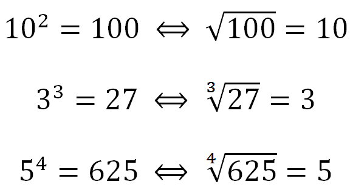

Radiação
Radiciação é o método matemático inverso à potenciação. Enquanto os cálculos com potências são determinados pela multiplicação de elementos iguais sucessivas vezes, a radiciação procura quais são esses elementos.

Voltar